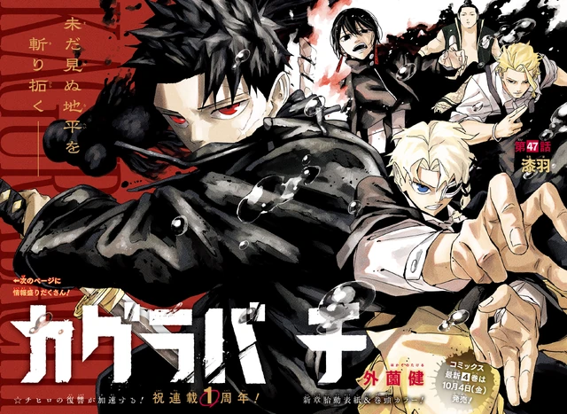

Overview
Hiruhiko is one of the ten. He is not Yura. He is the one sent to make a scene: the Kokugoku train, the kabuki house, then the Kyoto Bloodshed Hotel when Play turns the building into Kumeyuri’s stage. English recap channels treat him as the “next Sojo”, a craftsman of cruelty with a child’s face, and then watch Chihiro refuse the sequel.
Volume 6 and 8 jackets put him in the blood center opposite Chihiro. That is marketing telling you the fandom already picked a favorite monster for Part 1’s long middle.
Personality
He is one of the ten. He is not Yura. He is the one sent to make a scene. English recap channels treat him as the “next Sojo”, a craftsman of cruelty with a child’s face, and then watch Chihiro refuse the sequel. Sojo loved Kunishige’s work. Hiruhiko does not love objects. That is the whole difference. Kumeyuri’s Play is smoother when the wielder respects the room. Hiruhiko’s extension is contempt as a wrecking ball. The Kyoto Bloodshed Hotel loses its upper floors to that reading.
He thinks friendship is a stage. The Part 1 retrospectives spend real time on this. Blood Crane on the train, then a kabuki house, then Play at the hotel: every fight is a performance he wants someone to stay for. Chihiro will not stay. Yura assigns him because a scene is useful. The Hishaku need Uruha off the board and Iori flushed. Hiruhiko is the timer with a smile. He is not the mind. He is the noise the mind pointed at a train.
The child’s face is the craft problem. Volume 6 and 8 put him in the blood center opposite Chihiro because the fandom already picked a favorite monster for the long middle. He is not the first rival. He is the one who arrives after the first rival died on Datenseki, wearing a stolen banquet blade and asking to be the next chapter title. The book declines.
Abilities
Blood Crane is the innate sorcery. It is his before any Enchanted Blade. He boards Uruha’s train with it and takes the fight into a kabuki house. The Lifelong Contract is not his problem until he picks up Kumeyuri. After Samura’s Suzaku “kills” Uruha, the contract dies and the blade can be pulled off the board. Hiruhiko is the later wielder. Banquet takes the senses. Play takes the set.
He discovers the extension. If Play is respect, contempt is demolition. Destructive Play, his reading, not Uruha’s, drops the hotel’s upper floors. Suzaku later heals a building he had already started to unmake. Samura takes the blade off him. Ro of the Masumi recovers it. Hiruhiko is left with Blood Crane again: the crane without the banquet, the scene without the set.
He does not love objects, so the theater sword was always going to come out as wreckage. Uruha’s oiran were a war prodigy’s vocation. Hiruhiko’s oiran are a child knocking over furniture. Kuguri’s Twilight Wave and Toto’s blood tracking are other Hishaku kits in the same arc; Hiruhiko is the one the jackets sell. He is not the fastest bearer. He is not Yura’s coin. He is Play, aimed at a hotel full of Iori and Chihiro, and then he is disarmed.
Story role
He is absent from Vs. Sojo and the Rakuzaichi. The Sword Bearer Assassination arc is his stage. Chapter 47: Uruha’s train, Volume 6, Daybreak, is the boarding. Datenseki infantry come with him, Sojo’s leftover stones. The fight falls into a kabuki house. At Senkutsuji, Samura clears the temple and cuts Uruha down. Kumeyuri comes off the board and into Hiruhiko’s hands. The false death looks like his faction’s win. It is Samura’s mercy.
Owl hangs over the country. The Masumi take Iori to the Kyoto Bloodshed Hotel. Chihiro copies Iai off Kuguri and the house style. Iori’s seal breaks. Hiruhiko wrecks the upper floors with Play. Samura arrives. Feathers, banquet, goldfish. Volume 8, Dawn, puts Hiruhiko on the jacket with Chihiro and Iori, hotel silhouette under Owl. Samura takes Kumeyuri off him. Ro recovers it. The hotel wrecker is the middle of Part 1, not the end.
Tokyo belongs to Yura, Yukisada, Kasen’s leak, and the basement. Hiruhiko is the scene that already happened. Part 1 ends with Akemura loose and Kumeyuri already out of Hiruhiko’s hands. He was never the final assignment. He was the timer.
Relationships
Yura is the mind that sent him. Uruha is the bearer on the train, the prodigy whose blade Hiruhiko inherits after a false death. Samura is the man who both supplies that death and takes the sword back. Chihiro is the sequel Hiruhiko wants and does not get, Volume 6 and 8 jackets as marketing, the hotel as a refused rematch of Sojo.
Iori is in the hotel he wrecks. Kuguri is the other Hishaku in that house, Twilight Wave, the style Chihiro copies. Toto tracks blood. Hokuto, Uran, Bingo, Yukisada are the rest of the named ten. Sojo is the comparison English YouTube will not drop: first rival, weather sword, Datenseki death. Hiruhiko is younger, louder, and not a Kunishige scholar. Chihiro already had that argument.
Notes
Hiruhiko. Hishaku. Blood Crane. Enchanted Blade used: Kumeyuri (Play; Destructive Play). First major stage: train to Kokugoku / Senkutsuji, then the Kyoto Bloodshed Hotel. Volume 6 and Volume 8 jackets, blood center opposite Chihiro.
Chapter 47’s color page is the train. The Part 1 retrospective tape spends real time on his idea of friendship. Official chapters: VIZ / MANGA Plus. Recap channels clip him because he looks like a sequel antagonist. The book uses him as a timer.
The other young blade
Kuguri is the Hishaku swordsman who takes swordsmanship personally. Hiruhiko is the one who takes friendship personally. Both are in Kyoto. Toto pulls them out through the fire-gate when Samura arrives. Kumeyuri’s Play becomes demolition because Hiruhiko does not respect objects; Uruha’s Banquet was a different brief on the same steel. Natsuki wanted this sword. Uruha got it. Hiruhiko signed it after a false death. Ro recovered it. Eighteen, Blood Crane, killed at three, treats Chihiro as a peer-shaped friend. The ten’s loud younger blade. Org: Hishaku. Hotel partner: Kuguri. Blade: Kumeyuri.